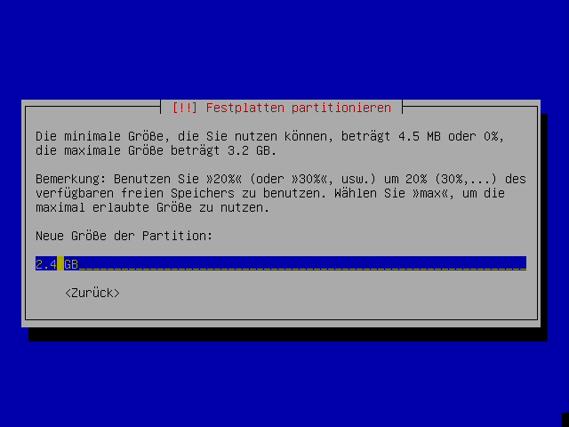
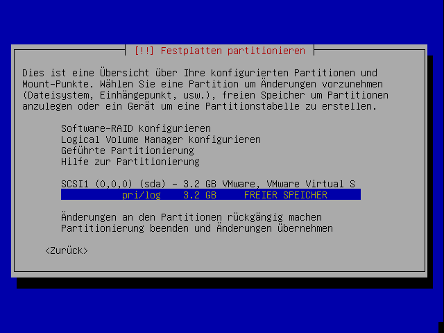
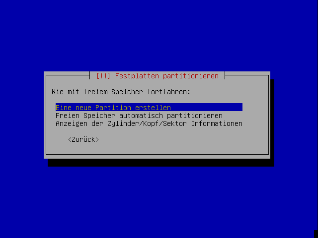
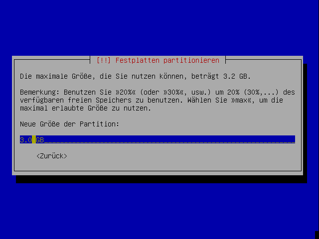
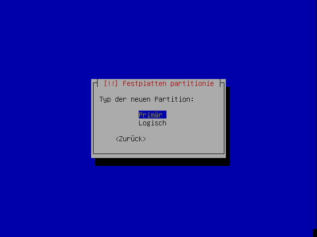
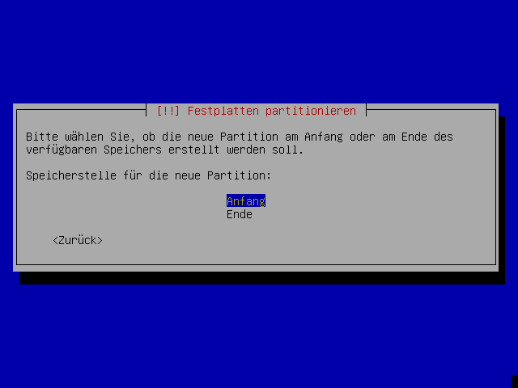
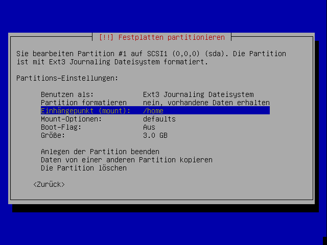
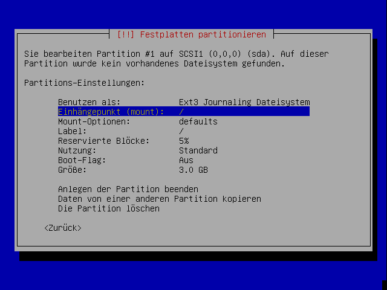
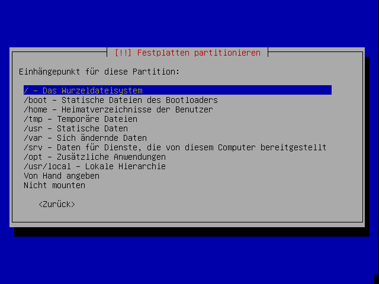
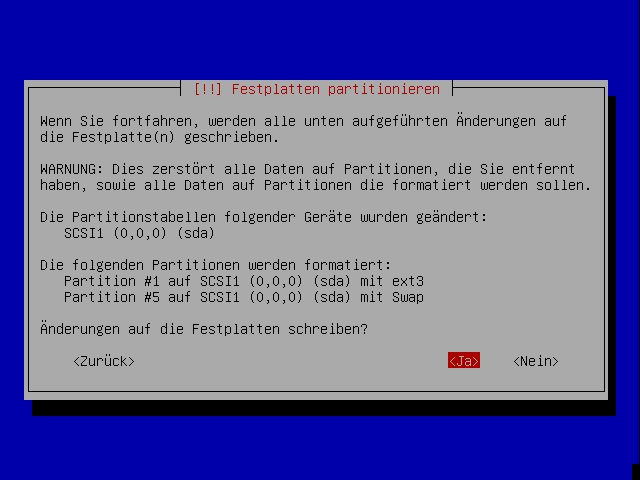

Partitionierung
Partitionierung¶
Wenn der Partitionierer geladen wurde, erscheint ein Bildschirm mit drei Wahlmöglichkeiten:

Wer während der Installation ein Software-RAID mit LVM kombinieren möchte, der sollte die Anleitung im Artikel Software RAID mit LVM befolgen.
Gesamtes Laufwerk löschen¶
Dies ist die einfachste Möglichkeit, wenn man nur Ubuntu auf einem neuen Rechner installieren will oder für Ubuntu eine eigene Festplatte zur Verfügung hat. Alle vorhandenen Daten auf der Festplatte gehen verloren.
Der Ubuntu-Installer löscht das gesamte Laufwerk und teilt sich alle Partitionen selber ein. Diese Methode ist für Einsteiger sehr einfach und zu empfehlen, solange keine wichtigen Daten auf der Festplatte sind.
Wie diese Partitionierung aussieht, zeigt der Installer nach der Bestätigung an. Danach hat man noch die Möglichkeit zurückzukehren.
Gesamtes Laufwerk löschen und LVM verwenden¶
Macht das gleiche wie oben, verwendet aber LVM für die Verwaltung der Partitionen.
Auch hier wird der Installer noch eine Zusammenfassung anzeigen.
Partitionstabelle von Hand eingeben¶
Dies ist die empfohlene Methode für folgende Fälle:
Ubuntu soll zusätzlich zu bereits vorhandenen Betriebssystemen auf einer Festplatte installiert werden. Andere Systeme können dabei verkleinert werden.
Es wurden bereits Partitionen für Ubuntu vorbereitet.
Partitionen anderer Systeme sollen gezielt eingebunden werden. Ansonsten werden alle vorhandenen Partitionen automatisch unter /media eingebunden.
Einzelne Bereiche des Systems sollen auf eigene Partitionen ausgelagert werden. Siehe Partitionierung.
Größe bestehender Partitionen ändern¶
Auf dem folgenden Bildschirm werden alle gefundenen Festplatten mit ihren Partitionen aufgelistet. Mit den Pfeiltasten muss nun die richtige Partition ausgewählt werden.

Nach Druck auf die Eingabetaste kommt die folgende Auflistung der Eigenschaften der Partition. Hier muss die Zeile mit der Größe ausgewählt werden. 
Wiederum weiter mit der Eingabetaste. Was jetzt kommt, ist verwirrend bis beängstigend, aber seltsamerweise richtig so.
"Ja" wählen und weiter mit der Eingabetaste. Noch wird natürlich gar nichts geschrieben. Jetzt wird erst einmal die gewünschte Größe abgefragt.

Hier den gewünschten Wert eintragen, weiter mit der Eingabetaste. Das war's auch schon - wirklich auf die Festplatte geschrieben werden die Änderungen erst ganz am Schluss der Partitionierung. Dateisysteme auf den Partitionen werden dabei durch die interne Verwendung des Volume-Management-Systems EVMS automatisch angepasst. Sollte dies nicht möglich sein, wird die Größenänderung verweigert. NTFS-Partitionen werden bei der Größenänderung so markiert, dass Windows beim nächsten Start automatisch eine Überprüfung durchführt - das ist kein Grund zur Beunruhigung.
Partitionen manuell erstellen oder einbinden¶
Anlegen einer neuen Partition¶
Wenn sich auf einer Festplatte genügend freier Platz befindet, kann dieser zum Anlegen neuer Partitionen genutzt werden.
Zuerst muss der freie Platz in der Übersicht ausgewählt werden:

Nach Druck auf die Eingabetaste erscheint die folgende Auswahl:

Mit der Eingabetaste bestätigt man hier die Vorauswahl "Eine neue Partition erstellen". Danach gibt man die Größe der neuen Partition ein:

Wiederum Bestätigung mit der Eingabetaste.
Als Typ der Partition kann meist "Logisch" gewählt werden, lediglich für die "Root-Partition" wird oft eine primäre Partition verwendet. Windows benötigt zum Booten eine primäre Partition, auch BSD-Systeme werden in primären Partitionen installiert, die dann weiter unterteilt werden. Wenn man gezwungen ist, alle primären Partitionen für andere Systeme zu verwenden, lässt sich Linux auch komplett in logischen Laufwerken installieren.

Wenn die neue Partition nicht den gesamten zusammenhängenden freien Platz belegt, kann man jetzt noch die Position festlegen:

Nun wird eine Übersicht der weiteren Eigenschaften der Partition angezeigt. Hier muss vor allem der Einhängepunkt ("mount point") für die Partition gewählt werden. Dies wird im übernächsten Abschnitt besprochen.
Einbindung bestehender Partitionen¶
Bestehende Partitionen können für das neue System verwendet werden. Dabei lassen sie sich formatieren oder mitsamt den enthaltenen Daten einbinden.
Dazu kann die bestehende Partition in der Übersicht (erste Abbildung auf dieser Seite) ausgewählt werden. Auf der nächsten Seite muss zunächst unter "Benutzen als" der verwendete Dateisystemtyp eingestellt werden. Ist der gewählte Typ mit dem bestehenden identisch, kann man wählen, ob man die existierenden Daten erhalten will:

Für die Einbindung bestehender Partitionen sollte ein Einhängepunkt angegeben werden. Bei FAT- oder NTFS-Partitionen sollten auch gleich die nötigen Optionen angegeben werden; Informationen dazu finden sich auf dieser Seite.
Sonst geht es weiter mit dem nächsten Abschnitt.
Einstellungen für neu angelegte oder zu formatierende Partitionen¶
Die folgende Übersicht enthält Einstellungen für eine neue oder bestehende Partition:

Als Dateisystem wird normalerweise ext3 oder ext4 verwendet.
Je nach Verwendungszweck der Partition muss der Einhängepunkt gewählt werden. Normalerweise wird je eine Partition für das Wurzeldateisystem ("root", /) und für die Benutzerdaten (/home) verwendet.

Die Verwendung als Auslagerungsspeicher (swap) wird über den Dateisystemtyp unter "Benutzen als" eingestellt:

Weitere Informationen zur sinnvollen Partitionierung und geeigneten Partitionsgrößen finden sich unter Partitionierung.
"Reservierte Blöcke" bezeichnen den Anteil am Speicherplatz, der für das System als Reserve gehalten werden soll. Normale Benutzer haben auf diesen Anteil keinen Zugriff. Während man hier bei allen Systempartitionen die Voreinstellung belassen sollte, kann man die Einstellung bei reinen Datenpartitionen verringern.
Sind alle Einstellungen gesetzt, wählt man "Anlegen der Partition beenden".
Partitionierung abschließen¶
Wenn alle Partitionen bearbeitet sind, kann man die Änderungen übernehmen:

Bevor die Änderungen tatsächlich geschrieben werden, bekommt man sie noch einmal gesammelt aufgelistet:

Wenn man hier mit "Ja" bestätigt, werden die Änderungen vorgenommen und die Installation fortgesetzt.
- Erstellt mit Inyoka
-
 2004 – 2017 ubuntuusers.de • Einige Rechte vorbehalten
2004 – 2017 ubuntuusers.de • Einige Rechte vorbehalten
Lizenz • Kontakt • Datenschutz • Impressum • Serverstatus -
Serverhousing gespendet von